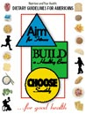
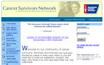
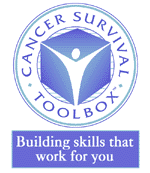

Health and Well-Being After Cancer
Below you will find links to resources that may help you enhance your health and well-being after cancer treatment.
On this Page:
National Cancer Institute/Depression
Provides information on feelings of depression during and after cancer treatment.
National Cancer Institute/Post-Traumatic Stress
Provides information on the occurrence, detection and treatment of post-traumatic stress disorder after cancer treatment is provided.
Memorial Sloan-Kettering Comprehensive Cancer/Post Treatment Resource Center
This Center offers support groups and referral to post-treatment resources for cancer survivors and their families. Contact information: Kerry Zampini, MSW, 1275 York Avenue, New York, NY 10021, (212) 717-3527.
American Cancer Society
This site provides information for survivors on staying healthy after cancer treatment. Nutritional concerns at different phases of cancer survivorship, from active treatment to advanced disease are identified based on the report, "Nutrition During and After Cancer Treatment: A Guide for Informed Choices by Cancer Survivors".
Federal Dietary Guidelines for Americans
This PDF file that provides science-based information about how Americans can choose diets that promote good health.
Nutrition in Cancer Care
This site provides information on nutrition and nutrition-related side effects from cancer treatment.
Association of Cancer Online Resources (ACOR)
Provides access to online cancer information and electronic support groups to patients, caregivers or anyone looking for answers and support about cancer and related disorders.
American Cancer Society/Cancer Survivor Network
A virtual community created by and for cancer survivors and caregivers as an outlet to cope with the challenges and spectrum of emotions that living with cancer can bring.
Cancer Care/Patient-to-Patient Network
Cancer Care's patient-to-patient network provides information about peer support, and Cancer Care support for cancer survivors.
- The Cancer Survival Toolbox Building Skills that Work for You,
 a free, self-learning audio program designed to help cancer survivors and their caregivers meet the challenge of their illness.
a free, self-learning audio program designed to help cancer survivors and their caregivers meet the challenge of their illness. - The Cancer Keys to Survivorship a free program that teaches cancer survivors, family members, friends, caregivers and health professionals the important skills to help live with, beyond and through cancer.
National Coalition for Cancer Survivorship (NCCS)
The NCCS Web site has several survivorship programs including:
National Cancer Institute (NCI)
This NCI Web site provides information about screening for different kinds of cancer.